Traduction française du jeu Satellaview (SNES/Super Famicom) トレジャーコンフリクス (Treasure Conflix) sortie en 1996 par Squaresoft.
Le jeu mélange des éléments de RPG avec des combats aériens en mode 7.
Cependant, l’essentiel du jeu consiste à parler à des PNJ et à résoudre des énigmes pour trouver des trésors.
Conseils pour une première partie
- Utiliser L et R avec le D-pad pour tourner plus vite.
- On ne peut trouver un trésor qu’après avoir obtenu un indice ou une carte pour ce trésor.
- Les cartes aux trésors peuvent être ouvertes depuis le pont du vaisseau, dans le coffre.
- Sélectionner une ville depuis la carte de navigation (START) place une flèche rouge sur la boussole de vol.
Pour retirer cette flèche, sélectionner “éteindre navigation” sur la carte de navigation. - En cas de “blocage”, parler à Loud donne une idée de ce qu’il faut faire.
Patch Français
– Août 2023 –
Patch v1.1 disponible ici : BS Treasure Conflix (French) 1.1.zip
– Février 2023 –
Patch v1.0 disponible ici : BS Treasure Conflix (French) 1.0.zip
Sur romhacking.net: https://www.romhacking.net/translations/6826/
Le patch s’applique à la ROM suivante :\
File: BS Treasure Conflix
No-Intro: Super Nintendo Entertainment System (v. 20180813-062835)
ROM SHA-1: DFF1D22D662FED96F45AC3E722C79C93469CA421
ROM CRC32: F50FB0B7
Testé avec le BIOS Satellaview : BS-X BIOS (English) [No DRM] [2016 v1.3]
Plus d’info sur le Satellaview: https://project.satellaview.org/downloads.htm
Images (version anglaise)
| Japonais | Anglais |
|---|---|
| 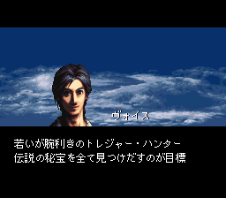 | 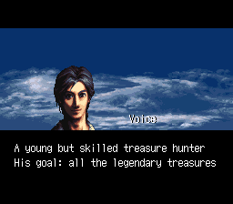 |
| 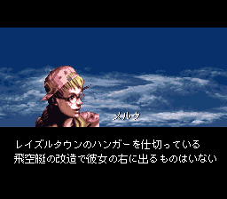 | 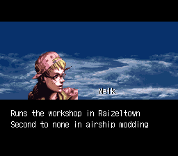 |
| 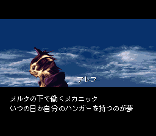 | 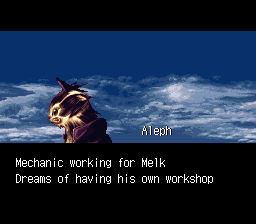 |
| 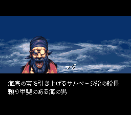 | 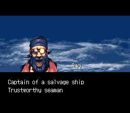 |
| 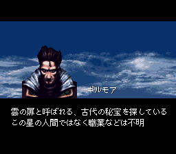 | 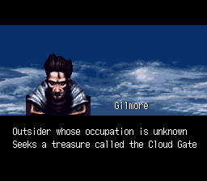 |
| 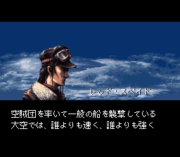 | 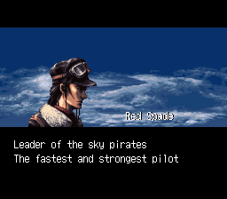 |
| 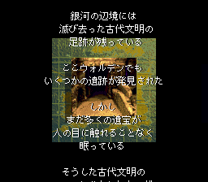 | 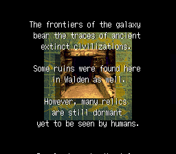 |
| 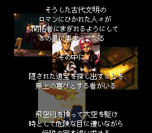 | 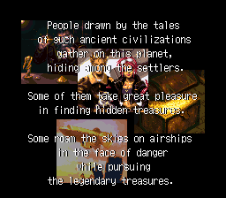 |
| 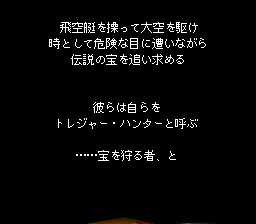 | 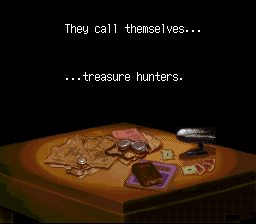 |
| 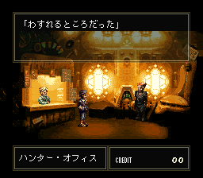 | 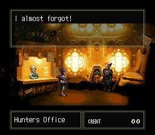 |
| 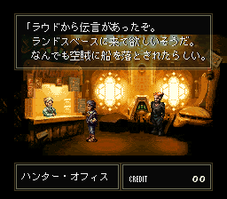 | 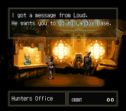 |
| 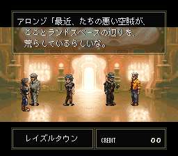 | 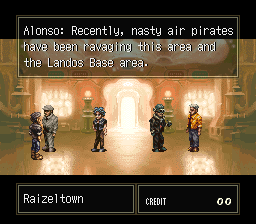 |
| 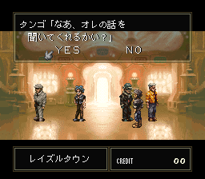 | 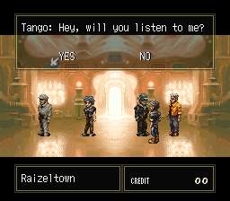 |
| 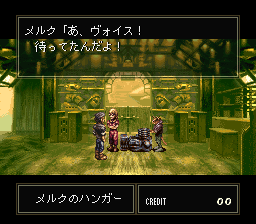 | 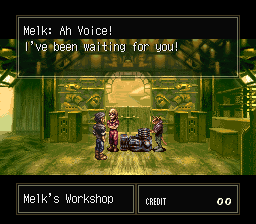 |
| 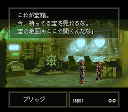 | 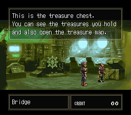 |
| 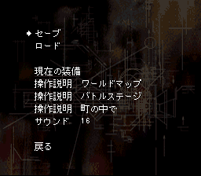 | 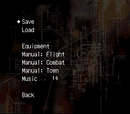 |
| 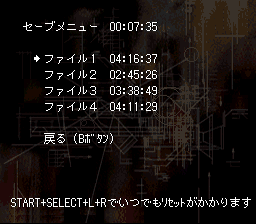 | 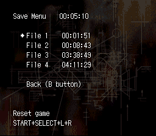 |
| 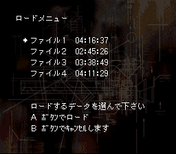 | 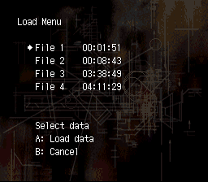 |
| 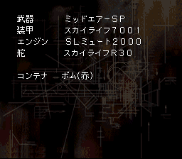 | 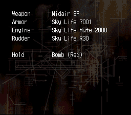 |
| 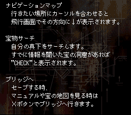 | 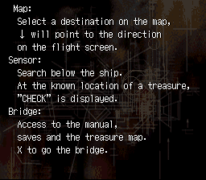 |
| 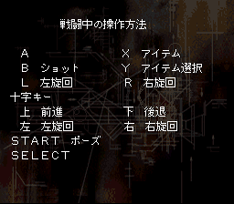 | 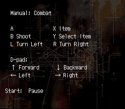 |
| 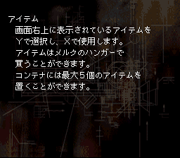 | 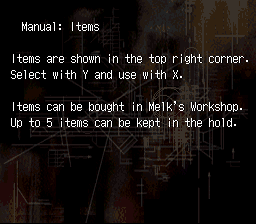 |
| 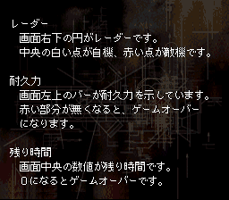 | 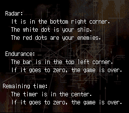 |
| 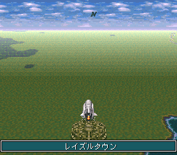 | 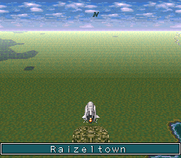 |
| 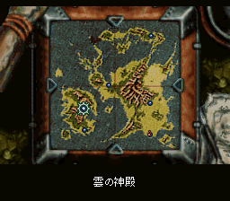 | 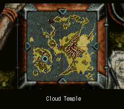 |
 |
|
Liste des trésors
| Id | Icône | Japonais | Débloqué par |
Nom | Lieu Indice/Carte | Indice |
|---|---|---|---|---|---|---|
| 01 | 不老不死の仙薬 | Stage 2 | Elixir de Vie | Carte à Landos Base | ||
| 02 | 神文玉爾 | Stage 2 | Sceau Impérial | Carte à Raizeltown | ||
| 03 | ドラゴンシールド | Stage 2 | Bouclier du Dragon | Carte à Kazusa Base | ||
| 04 | 大地神の鎧 | Stage 2 | Armure de Titan | Carte à Peppermint | ||
| 05 | サファイアの冠 | Stage 3 | Couronne de Saphirs | Carte à Landos Base | ||
| 06 | 呪縛の魔鏡 | Stage 2 | Miroir Maudit | Carte à Fort Fatras | ||
| 07 | 太陽の指輪 | Stage 2 | Anneau Solaire | Carte à Peppermint | ||
| 08 | 金の聖杯 | Stage 3 | Calice d’Or | Carte à Peppermint | ||
| 09 | 女神の像 | Stage 2 | Statue Divine | From Nasca in the Cloud Temple | “Mer intérieure sacrée, regarde la surface depuis le sud-est, un visage de profil se dessine. Cache le désespoir dans les yeux et l’espoir derrière le nez…” | |
| 10 | 金塊 | Stage 2 | Lingots d’Or | From Keane in Peppermint | “Il y a une chaîne de montagne à côté de Landos Base. L’or des voleurs est caché dans l’une des vallées.” | |
| 11 | Ａ゛キャッツアイ | Stage 2 | Oeil de Chat | Guilde de Kazusa Base | “Le Triangle Maudit… La mer envoûtante qui a coûté tant de vies… Un âme errante s’est perdue dans une grande forêt et continue d’errer. Dans les profondeurs de la forêt se trouve un oeil de chat.” | |
| 12 | 白金の飾り灯篭 | Stage 2 | Lanterne de Platine | From Fish in Fort Fatras | “Une lanterne de platine est enfouie dans l’une des quatre pattes.” | |
| 13 | 邪神の彫像 | Stage 2 | Statue de Démon | From Nasca in the Cloud Temple | “Mer intérieure sacrée, regarde la surface depuis le sud-est, un visage de profil se dessine. Cache le désespoir dans les yeux et l’espoir derrière le nez…” | |
| 14 | アメジストの腕輪 | Stage 2 | Bracelet Améthyste | Guilde de Kazusa Base | “Le bracelet est dans la vallée de la montagne fracturée.” | |
| 15 | ルビーの指輪 | Stage 2 | Anneau Rubis | From Silva in Peppermint | “L’anneau rubis est un cadeau pour l’île des parents, pas les grand-parents ni les enfants.” | |
| 16 | エメラルドの指輪 | Stage 2 | Anneau Émeraude | Guilde de Fort Fatras | “Où les arbres se croisent, l’émeraude brille.” | |
| 17 | 月光に光る石 | Stage 2 | Éclat Lunaire | Guilde de Landos Base | “Sur une île aride, les pierres brillent au reflet de lune.” | |
| 18 | 銀の祭器 | Stage 1 | Vase Argenté | Guilde de Kazusa Base | “Il y a une grande montagne au nord-ouest de Kazusa Base. Dans une clairière dans les bois adjacents, un ancien festival s’est tenu. Le vase cérémoniel en argent utilisé a été perdu dans cette forêt.” | |
| 19 | 天使の弓矢 | Stage 2 | Arc d’Ange | Guilde de Fort Fatras | “Un ange tire une flèche vers la source qui guérit la douleur brûlant la gorge. Le voyageur s’endort à l’ombre des arbres.” | |
| 20 | 魅惑の指輪 | Stage 2 | Anneau de Charme | Kazusa Base | “L’esprit de la Mer Morte est délimité d’un côté par des eaux maudites. L’anneau brille sur le bras de terre qui délimite l’autre côté.” | |
| 21 | 銀の燭台 | Stage 2 | Chandelier Argenté | Guilde de Raizeltown | “Quand la brume s’éclaircit, va au bout du cap et regarde au loin, tu verras une petite île derrière une grande île. Tout droit dans cette direction se trouve encore une autre île où j’ai caché le trésor.” | |
| 22 | 古代宗教経典 | Stage 2 | Textes Sacrés | Guilde de Fort Fatras | “…qui s’est perdu dans le canyon du nord.” | |
| 23 | 三つ目人のどくろ | Stage 2 | Crâne Trioculé | Peppermint | “Un crâne à trois yeux sur des îles triplées.” | |
| 24 | 金の髪飾り | Stage 2 | Barrette Dorée | Guilde de Raizeltown | “La Barrette Dorée se trouve à la base du bras tordu.” | |
| 25 | 真珠の首飾り | Stage 1 | Collier de Perle | Guilde de Peppermint | “Sept morceaux du collier sont tombés dans l’océan. De sept, décompte jusqu’à quatre, là est caché l’enfant de perle.” | |
| 26 | 正史戦記 | Stage 1 | Récit de Guerre | Guilde de Landos Base | Dans le Massif de Grande Sierra qui s’étend au nord d’ici, il y a une vallée encaissée appelée Bosquet de l’Ermite. La rumeur dit qu’un livre ancient y est caché. | |
| 27 | 黒珊瑚の首飾り | Stage 1 | Épingle de Corail | Guilde de Raizeltown | “Il y a une forêt sur la côte Est. L’Épingle de Corail est cachée là-bas.” | |
| 28 | 古代の通貨 | Stage 2 | Pièce Ancienne | Landos Base | “Dans une forêt, entre deux montagnes jumelles entourées de verdure…” | |
| 29 | 古代王朝の宝冠 | Stage 2 | Couronne Royale | Sous l’eau dans le Triangle Maudit | ||
| 30 | 白鳳のつるぎ | Stage 2 | Épée Divine | Sous l’eau dans le Triangle Maudit | ||
| 31 | ダイヤの指輪 | Stage 2 | Anneau de Diamant | Sous l’eau dans le Triangle Maudit | ||
| 32 | 金の腕輪 | Stage 2 | Bracelet d’Or | Sous l’eau dans le Triangle Maudit |
Carte des trésors
PNJ des enchères
| Japonais | Nom | Description |
|---|---|---|
| ケイヤー | Kayer | Homme, 58 ans Un vieil homme au caractère bien trempé. Sa robe tape-à-l’œil témoigne de sa richesse. C’est un riche marchand qui a fait une énorme fortune de son vivant, mais il est maintenant (officiellement) à la retraite, laissant ses enfants reprendre ses affaires. Il dépense désormais ses économies pour collectionner des trésors, ce qui est son principal objectif dans la vie. L’un de ses passe-temps consiste à élever la voix lors des ventes aux enchères. Il est l’un des enchérisseurs les plus riches du Japon. Ses goûts sont plutôt normaux. |
| セフマン | Sefman | Homme, 67 ans C’est un vieil homme qui semble avoir perdu son énergie. Il porte des vêtements coûteux mais de couleur unie. C’est un collectionneur qui aime l’argent. Propriétaire d’un vaste domaine agricole. Il montre une obsession inhabituelle pour les trésors en or et ne s’intéresse à rien d’autre. Il est cependant un peu fragile. Même pendant la vente aux enchères, il manque de vision dans ses actions et est très négligent. |
| ロゼルグ | Rozergue | Homme, 33 ans Cheveux blonds et habillé comme un gentleman. Il vient d’une famille aristocratique et est né dans la richesse. Il est très sarcastique et n’hésite pas à se moquer des autres. Il aime dire “Oh, eh bien…” et “Huh…”. Il a à peu près le même niveau de richesse que n’importe qui d’autre. Ses loisirs sont également normaux, mais il semble être attiré par des choses bizarres. |
| オライオス | Orios | Homme, 46 ans Il a les cheveux et la barbe noirs et est habillé comme un gentleman. Il est le descendant d’une importante famille de samouraïs. Il est poli, ferme et a une personnalité rafraîchissante. Il collectionne les antiquités et s’intéresse particulièrement aux objets ayant une valeur historique. Il n’a pas beaucoup d’argent. |
| ビアンヌ | Viane | Femme, 26 ans Elle est vêtue d’une robe aux couleurs criardes. Elle est la concubine d’un riche marchand. Elle est hautaine et égocentrique. Elle ne se soucie pas des autres. Elle aime les bijoux. Elle est prompte à éclater de rire. Bien que ses ressources financières soient censées être inférieures à celles des autres enchérisseurs, elle se surpasse toujours et joue les dures. |
| ジェシュア | Jeshua | Femme, 37 ans Elle porte une robe de couleur normale. Un personnage modeste dans le cercle restreint d’une famille célèbre. Elle est modeste et n’est pas impolie avec les autres. Elle s’intéresse aux objets de valeur mystérieuse. En fait, c’est une rêveuse et une personne un peu dangereuse. Elle est assez riche. |
| ボーンズ | Bones | Homme, 48 ans C’est un personnage important (un protagoniste de l’histoire). Il porte une robe unique. Il s’intéresse beaucoup aux objets de valeur historique et peu au reste. Il est un peu indécis malgré sa richesse. |
| バビール | Babil | Homme, âge inconnu Porte des robes de couleur extrêmement suspectes. Personne mystérieuse dont l’adresse, la profession, l’âge et l’identité sont inconnus. Il apparaît rarement. Alors qu’on le croit silencieux, il surenchérit de façon démesurée et s’en va avec le trésor à la main, laissant les gens autour de lui abasourdis. |
La description des participants aux enchères a été publiée dans un magazine Satellaview en Février 1996.
Source: https://ameblo.jp/satebo/entry-12735967487.html
Générique
| Rôle | Nom | - |
|---|---|---|
| Concept | 岡庭 真一郎 | Shinichiro Okaniwa |
| Histoire | 江藤 桂大 | Keita Etō |
| Développeur | 杉本 浩二 | Koji Sugimoto |
| Graphisme | 本根 康之 | Yasuyuki Honne |
| Musique | 仲野 順也 | Junya Nakano |
| Concepts Visuels | 直良 有祐 | Yusuke Naora |
| Séquence Ennemis | 鈴木 敏章 | Toshiaki Suzuki |
| Graphisme Ennemis | 浜坂 真一郎 | Shinichiro Hamasaka |
| Programmation Évènement | 遠藤 利男 | Toshio Endo |
| Graphisme Personnages | 林 真佐秋 | Masāki Hayashi |
| Graphisme Carte du Monde | 春木 あかね | Akane Haruki |
| Paramètres | 岡崎 礼貴 | Hiroyoshi Okazaki |
| Prog. Enchères | 松本 岳美 | Takemi Matsumoto |
| Effets Sonores | 中村 栄治 | Eiji Nakamura |
| Prog. Son | 赤尾 実 | Minoru Akao |
| Publicité | 山下 弘二 飯田 克信 |
Koji Yamashita Katsunobu Iida |
| Remerciements | 花田 憲昌 佐々木 洋勝 |
Norimasa Hanada Hirokatsu Sasaki |


Share this post: